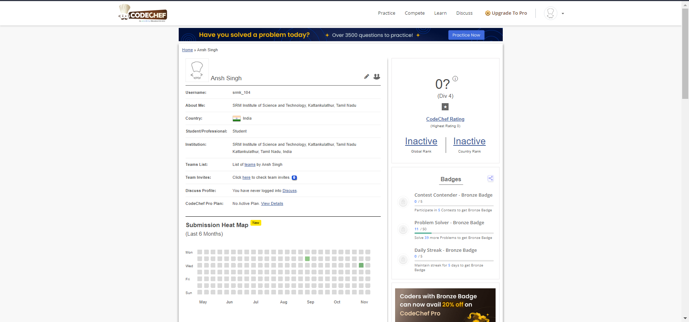
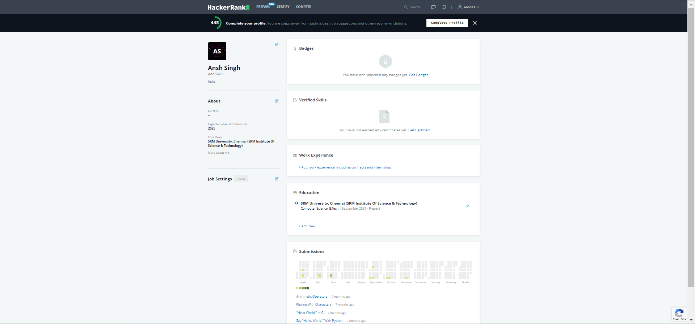

About Me
Hello, If you have come here i guess you really want to know more about me so here it is. I have got a Certificate for completing the SRM elab portal for C language till level 3
I have also completed my Codechef and hackerank websites thoroughly.
And I have also won a certificate for winning the game creation from curious as A student I have also completed my first year successfully and I am currently aiming for my 2nd year.